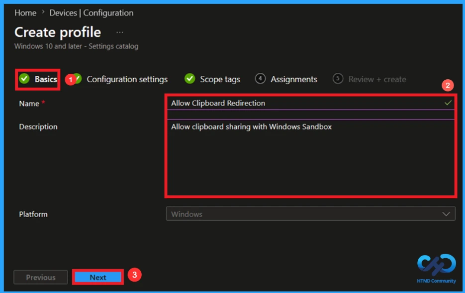
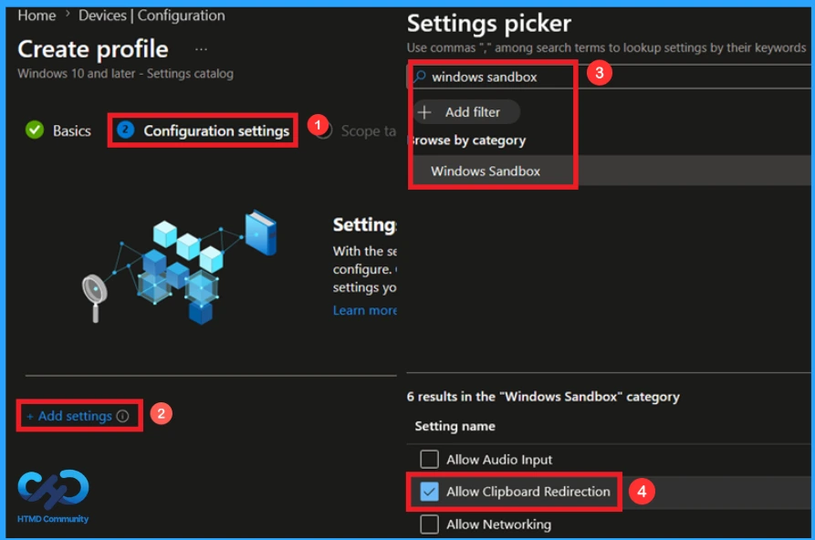
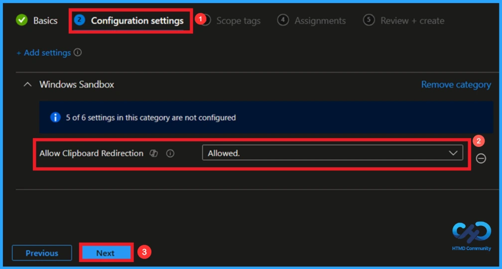
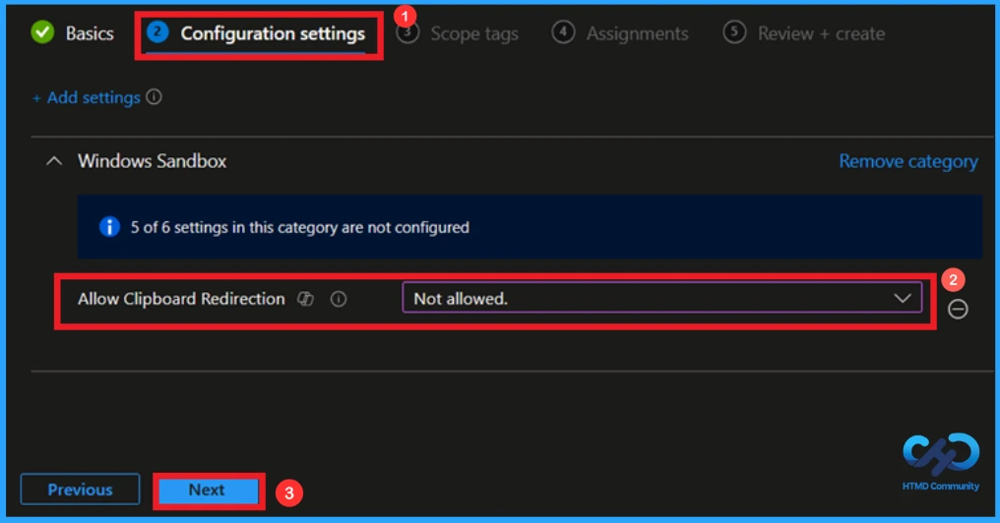
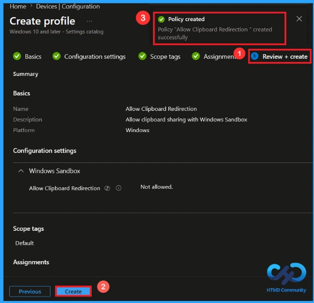
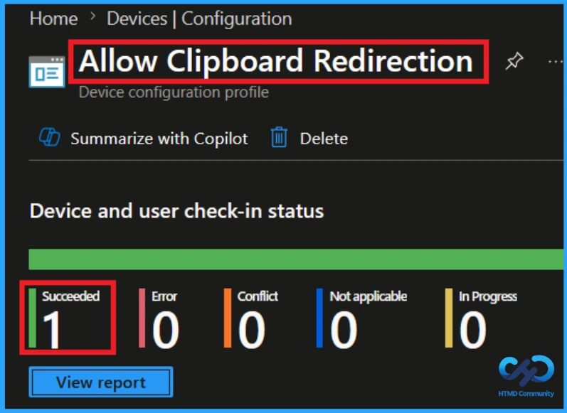
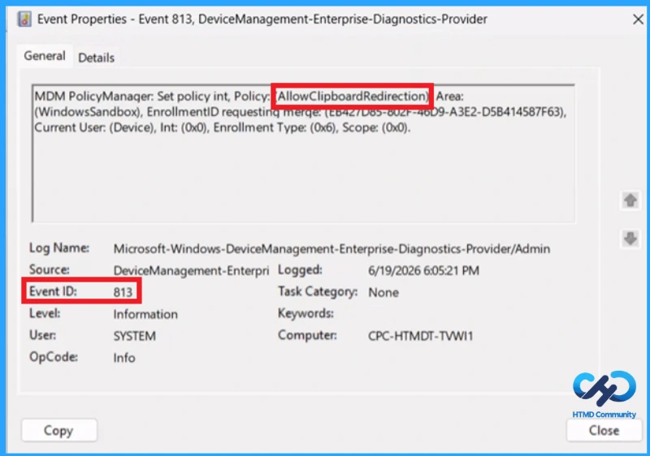
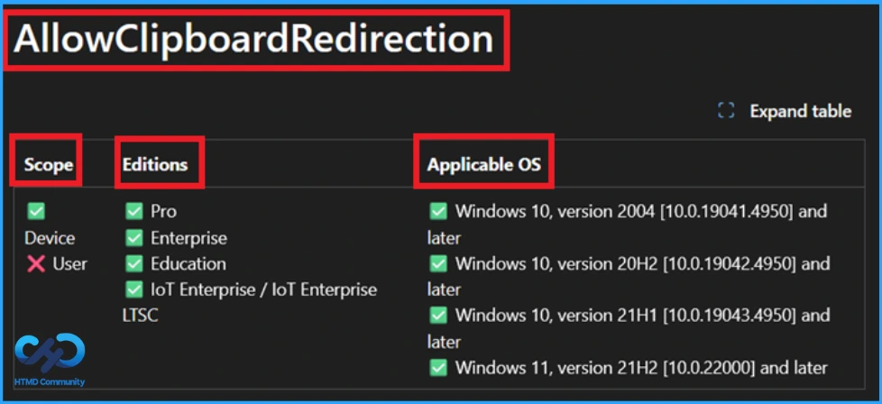
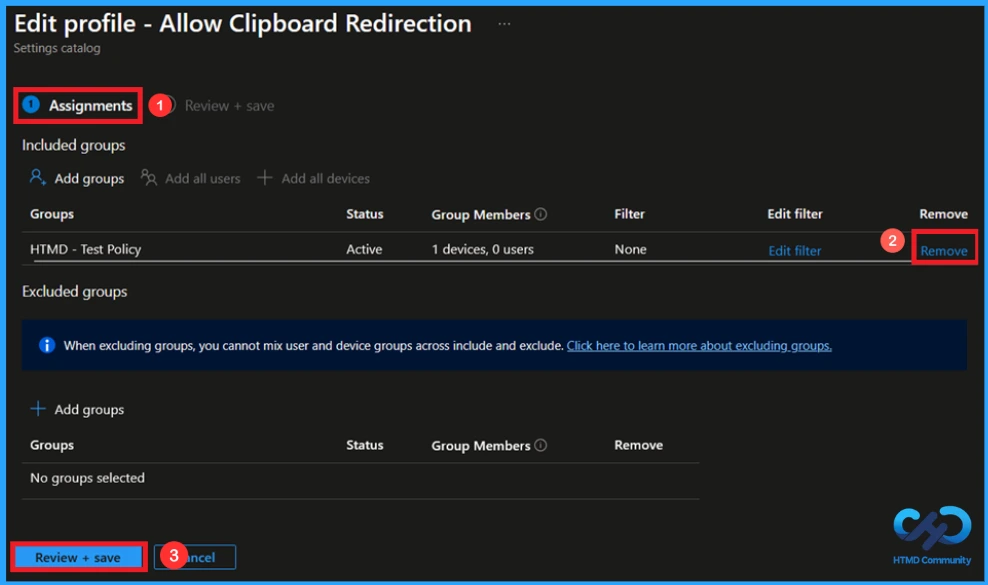
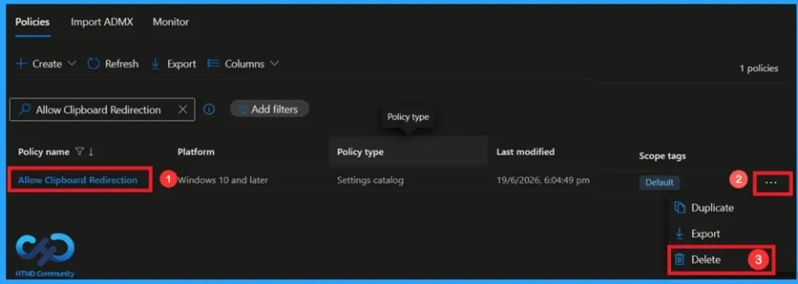

Key Takeaways
- When enabled, users can copy and paste data between the host and Sandbox.
- Controls clipboard sharing between the host device and Windows Sandbox.
- When disabled, clipboard redirection is blocked to prevent data transfer.
- Helps improve security by reducing the risk of sensitive data leakage.
- Applies at the device level and is supported on Windows 10 and Windows 11.
Hey, let’s learn about how to protect sensitive data by disabling copy and paste between host and Windows sandbox using Intune. This policy setting enables or disables clipboard sharing with the sandbox. Basically, this policy helps to control whether users can copy and paste content between the host device and the Windows sandbox. This helps to protect sensitive information from being copied.
Table of Contents
What are the Advantages of this Policy?
This policy manages clipboard access between Windows Sandbox and the host device to balance usability and security.
1. Improves data security by controlling clipboard access.
2. Prevents unauthorised transfer of information.
3. Creates a more isolated and secure Sandbox environment.
Protect Sensitive Data by Disabling Copy and Paste Between Host and Windows Sandbox using Intune
Allow Clipboard Redirection is a Windows Sandbox policy that manages clipboard sharing between the host device and the Sandbox environment.
How to Create this Policy
To create a policy, the first step that you must do is to sign in to the Microsoft Intune Admin Centre. After clicking on the Device on the left side of the screen, select Configuration and then click Create and select New Policy.

Profile Creation for this Policy
When you click on the New Policy, a box will appear in which you can specify the platform and profile type. From that, choose the platform as Windows 10 and later and profile type as Settings Catalog.

Naming this Policy
In the Basics Tab, you can give an appropriate name and description. So, you can identify the policy later by using its name. Giving the policy a Name is mandatory and Description is not important. Description briefly explain what the policy does and why it was created. Here, I gave the policy name as allow clipboard redirection and the description as allow clipboard sharing with Windows sandbox. Click Next to continue.

Configuration Tab in this Policy
In the Configuration Settings, you can add a policy. To add the policy, click on the +Add Settings. Then the Settings Picker will open on the right side of the screen. Here, I browsed the policy category (Windows Sandbox) and clicked on its category. Then I selected the policy (allow clipboard redirection) from the list of policies and enabled the Setting name.

Default settings of this Policy
This policy setting enables or disables clipboard sharing with the sandbox. If you don’t configure this policy setting, clipboard sharing will be enabled. If you enable this policy setting, copy and paste between the host and Windows Sandbox is permitted. You can create the policy by enabling it if you want.

Not allowed Option in this Policy
If you disable this policy setting, copy and paste in and out of Sandbox will be restricted. This controls whether users can copy and paste content between the host device and Windows Sandbox. Disabling this policy blocks clipboard sharing and helps protect sensitive data.
- If you disable this policy setting, copy and paste in and out of Sandbox will be restricted.
- Here I chose this option.
- Click Next to continue.

Scope Tag to Control Visibility
A scope tag in Intune is used to control visibility and access to Intune resources based on administrative roles. Scope tags are not mandatory. You can add the scope tag using the select scope tags button. Click Next to continue.

Add Group using the Assignment Tab
On the assignments tab, you can select which users or devices get this policy. Under Include Groups, click Add Groups. From the list, select the group that you want to target (HTMD – Test Policy). Then click the Next button to continue.

Review+Create Tab
At Review + Create tab you can view the summary. This is the last step for policy creation. you can view the previous option that you selected. if you want to make any kind of changes click on the previous and then click on Create to finish. Then a notification will pop up and confirms that your policy has been created succesfully.

Monitoring Status of this Policy
It is very easy to check whether your policy has been succeeded or not. Usually it take plenty of time to get a policy succeeded but using manual sync option through company portal you can get it succeeded easily. To check if policy has been succeeded or not go to the Devices and then click on Configuration click on the specific policy to see its details.

Client-Side Verification
To confirm if a policy has been applied, use the Event Viewer on the client device. Go to Applications and Services Logs > Microsoft >Windows >Device Management > Enterprise Diagnostic Provider > Admin. From the list of policies, use the Filter Current Log option and search for Intune event 813.
MDM PolicyManager: Set policy int, Policy: (AllowClipboardRedirection), Area:
(WindowsSandbox), EnrollmentID requesting merge: (EB427D85-802F-46D9-A3E2-D5B414587F63),
Current User: (Device), Int: (0x0), Enrollment Type: (0x6), Scope: (0x0).

Configuration Service Provider (CSP)
The Policy Configuration Service Provider (CSP) is a feature used by organisations to manage and control settings on Windows 10 and 11 devices. It explains what each policy does, what settings or values can be used, and how it connects to older Group Policy settings (Group Policy Mapping details).
Description framework properties:
| Property name | Property value |
|---|---|
| Format | int |
| Access Type | Add, Delete, Get, Replace |
| Default Value | 1 |
Allowed values:
- 0 – not allowed
- 1 – allowed(default)
Group policy mapping:
| Name | Value |
|---|---|
| Name | AllowClipboardRedirection |
| Friendly Name | Allow clipboard sharing with Windows Sandbox |
| Location | Computer Configuration |
| Path | Windows Components > Windows Sandbox |
| Registry Key Name | SOFTWARE\Policies\Microsoft\Windows\Sandbox |
| Registry Value Name | AllowClipboardRedirection |
| ADMX File Name | WindowsSandbox.admx |

How to Remove an Assigned Group from this Policy
If you need to remove a group from a policy assignment for security updates. Open the policy (allow clipboard redirection) from the configuration tab and click on the edit button. Then, click on the Remove button. Click Review + Save after making the changes.
For detailed information, you can refer to our previous post – Learn How to Delete or Remove App Assignment from Intune using by Step-by-Step Guide.

How to Delete this Policy from Intune Portal
If you want to delete this policy for any reason, you can do it easily. First, search for the policy name (allow clipboard redirection) in the configuration section. When you find the policy name, click the 3-dot menu next to it and tap the Delete option.
For detailed information, you can refer to our previous post – Learn How to Delete or Remove App Assignment from Intune using by Step-by-Step Guide.

Need Further Assistance or Have Technical Questions?
Join the LinkedIn Page and Telegram group to get the latest step-by-step guides and news updates. Join our Meetup Page to participate in User group meetings. Also, Join the WhatsApp Community and WhatsApp Channel to get the latest news on Microsoft Technologies. We are there on Reddit as well.
Author
Anoop C Nair has been Microsoft MVP from 2015 onwards for 10 consecutive years! He is a Workplace Solution Architect with more than 22+ years of experience in Workplace technologies. He is also a Blogger, Speaker, and Local User Group Community leader. His primary focus is on Device Management technologies like SCCM and Intune. He writes about technologies like Intune, SCCM, Windows, Cloud PC, Windows, Entra, Microsoft Security, Career, etc.